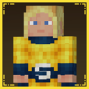

Overview#

Soul Stone
infinity:soul_stone - Color
- Orange (
#DE7300) - Container
- None
- Found on
- Vormir's Edge, Vormir
- Power
infinity:soul_stone
You get the Soul Stone's power by holding it, wearing it in the  Curios head slot, putting it in your gauntlet, or putting it in a
Cosmi-Rod.
Curios head slot, putting it in your gauntlet, or putting it in a
Cosmi-Rod.
Getting it#
- Kill one of your own tamed pets. The first time you do, you get a
 Best Friend's Soul ("How Could You").
Best Friend's Soul ("How Could You"). - Go to Vormir, either with the Space Stone's Teleport GUI (dimension
infinity:vormir, around X 212, Z 99) or with a rocket. - Trade the Best Friend's Soul to the Soul Guardian for the Soul Stone.
More about the Soul Guardian and its other trades is on Finding the Stones.
Abilities#
Click an ability in the tree to see what it does, what it costs and what it needs. Lines show what has to come first.
Glow
Hold to see every mob and player within 100 blocks outlined in orange.
- Needs
- Nothing, it's a starting entry
- Leads to
- Locate Entity
infinity: · palladium:
Immortality
You can not die. Needs all six stones.
Every hit is cancelled before it lands, shown with soul particles. That includes damage that normally goes through invulnerability.
- Needs
- Health
- Leads to
- Immortality Toggle
- Stones
 Power Stone
Power Stone  Space Stone
Space Stone  Reality Stone Soul Stone
Reality Stone Soul Stone  Time Stone
Time Stone  Mind Stone
Mind Stone
infinity: · palladium:
Saturation
You never get hungry.
- Needs
- Nothing, it's a starting entry
- Leads to
- Saturation Toggle
infinity: · palladium:
Effect Immunity
Bad effects can't be given to you at all, and any you already have are cleared.
Covers Poison, Wither, Slowness, Weakness, Mining Fatigue, Hunger, Nausea, Blindness, Darkness, Bad Omen and Bad Luck. They're refused as they're applied, whether they come from a potion, a mob or a command.
- Needs
- Nothing, it's a starting entry
- Leads to
- Effect Immunity Toggle
infinity: · infinity:
Summon Zombie
Summons up to six zombies in Thanos armor on your team, one stored soul each.
Three named ones (Transfer Zombie, Pugmeowla Zombie and Dark Zombie) and three normal ones, never babies. Each costs one
soul from Soul Storage, so with fewer souls you get fewer zombies (named ones first) and with none you get nothing. You and the
zombies join the peaceful team so they don't go for you.
- Needs
- Nothing, it's a starting entry
infinity: · palladium:
Health
Close to infinite max health.
- Needs
- Nothing, it's a starting entry
- Leads to
- Immortality, Health Toggle
infinity: · palladium:
Enter / Exit Soulworld
Takes you into the Soulworld, along with every mob, animal and player within 5 blocks of you. Use it again to come back.
Everyone arrives at Y 72 above the same X and Z. Each mob remembers where it came from, so Exit Soulworld (which replaces the ability while you're inside) sends them all back to their own spot.
- Needs
- Nothing, it's a starting entry
infinity: · infinity:
Regeneration
Very strong permanent Regeneration.
- Needs
- Nothing, it's a starting entry
- Leads to
- Regeneration Toggle
infinity: · palladium:
Locate Entity
Lets you use /infinity soul locateentity
The command finds the online player with that name, otherwise the closest living thing with that name (a mob named with a name tag), in your dimension first and then the others. It tells you the coordinates and the dimension. With it unlocked, the Mind Stone's Mind Reading also shows where its target is and can read a mind by name from anywhere. Anything with soul immunity can't be found.
- Needs
- Glow
infinity: · infinity:
Soul Storage
Everything you kill gives you a soul, up to 50 (the orange bar).
Clones and mobs that were already drained don't count. See Soul Storage.
- Needs
- Nothing, it's a starting entry
- Leads to
- Soul Heal
infinity: · infinity:
Soul Heal
Spend 1 soul to heal 2 hearts.
Most useful early on, before you can afford Health and Regeneration.
- Needs
- Soul Storage
- Leads to
- Soul Drain
infinity: · infinity:
Soul Drain
Pull the soul out of the mob you look at (8 blocks). It stands still and turns grey.
Gives you 1 soul. Use it while sneaking to give a drained mob its soul back for 1 soul. Players,
bosses (#forge:bosses), clones and mobs that already have no AI can't be drained. The mob stays drained after a
reload.
- Needs
- Soul Heal
infinity: · infinity:
Regeneration Toggle
Free. Click it in the skill tree to turn Regeneration off or back on.
- Needs
- Regeneration
infinity: · infinity:toggle
Health Toggle
Free. Click it in the skill tree to turn Health off or back on.
- Needs
- Health
infinity: · infinity:toggle
Effect Immunity Toggle
Free. Click it in the skill tree to turn Effect Immunity off or back on.
- Needs
- Effect Immunity
infinity: · infinity:toggle
Saturation Toggle
Free. Click it in the skill tree to turn Saturation off or back on.
- Needs
- Saturation
infinity: · infinity:toggle
Immortality Toggle
Free. Click it in the skill tree to turn Immortality off, so you take damage and can die again, or back on.
- Needs
- Immortality
infinity: · infinity:toggle
Skill tree costs#
The defensive passives are the expensive ones: Effect Immunity 16, Regeneration 16, Health 48, Immortality 128. Saturation, Effect Immunity, Regeneration, Health and Immortality each get a free toggle once you own them. With Immortality switched off you take damage and can die like normal.
Full cost table
| Ability | Cost | Unlock after | Use |
|---|---|---|---|
| Soul Storage | 4 | Nothing | Passive |
| Soul Heal | 6 | Soul Storage | Key press |
| Soul Drain | 12 | Soul Heal | Key press |
| Glow | 3 | Nothing | Hold |
| Locate Entity | 4 | Glow | Passive |
| Summon Zombie | 3 | Nothing | Key press |
| Enter / Exit Soulworld | 8 | Nothing | Key press |
| Saturation | 4 | Nothing | Passive |
| Effect Immunity | 16 | Nothing | Passive |
| Regeneration | 16 | Nothing | Passive |
| Health | 48 | Nothing | Passive |
| Saturation Toggle | Free | Saturation | Skill tree switch |
| Effect Immunity Toggle | Free | Effect Immunity | Skill tree switch |
| Regeneration Toggle | Free | Regeneration | Skill tree switch |
| Health Toggle | Free | Health | Skill tree switch |
| Immortality | 128 | Health | Passive |
| Immortality Toggle | Free | Immortality | Skill tree switch |
| Everything | 252 | ||
Soul Storage#
Once you have Soul Storage, everything you kill gives you a soul, up to 50. They're kept in the
SoulStorage scoreboard objective and shown on the orange bar. Clones and mobs you've already drained don't give one.
Soul Heal
- Souls
- −1
- What it does
- Heals 2 hearts. Does nothing at full health or with no souls.
Soul Drain
- Souls
- +1
- What it does
- Drains the mob you're looking at, which then stands still and turns grey.
Soul Drain while sneaking
- Souls
- −1
- What it does
- Gives a drained mob its soul back.
Summon Zombie
- Souls
- −1 per zombie
- What it does
- Raises up to six zombies, one per soul. With fewer souls you get fewer zombies, named ones first.
Finding anyone#
Locate Entity lets you use /infinity soul locateentity to find a player, or a mob named with a name tag, in any dimension. With the Mind Stone too, Mind Reading shows where its target is and can read a mind by name from anywhere. Things with soul immunity (from addons) can't be found, drained or pulled into the Soulworld.
The Soulworld#
Enter Soulworld takes you and everything within 5 blocks to infinity:, a flat orange world of smooth red
sandstone with a thin layer of water on top. Everyone lands at Y 72 above the same X and Z. Use the same slot again (it turns into Exit
Soulworld) to send everyone back to where they were. More on Dimensions.
When the defenses stop working#
- After the Snap: while you're burnt, Health, Regeneration and Immortality are locked, along with most other stone abilities.

Powerborne's Stormbreaker: if you're wearing the Infinity Gauntlet and a thrown Stormbreaker from the Powerborne addon gets within 10 blocks of you, your stone abilities lock just like after the Snap, the Soul Stone's defenses included. Only the Space Stone's portals, the Power Stone's Power Blast and Damage Control keep working. See Optional mods.